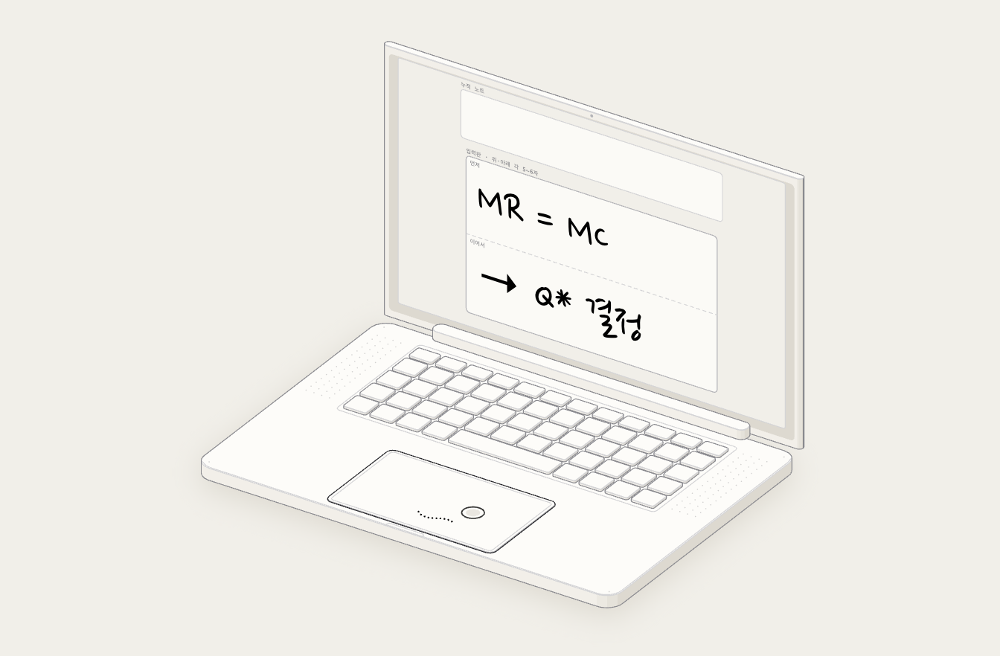
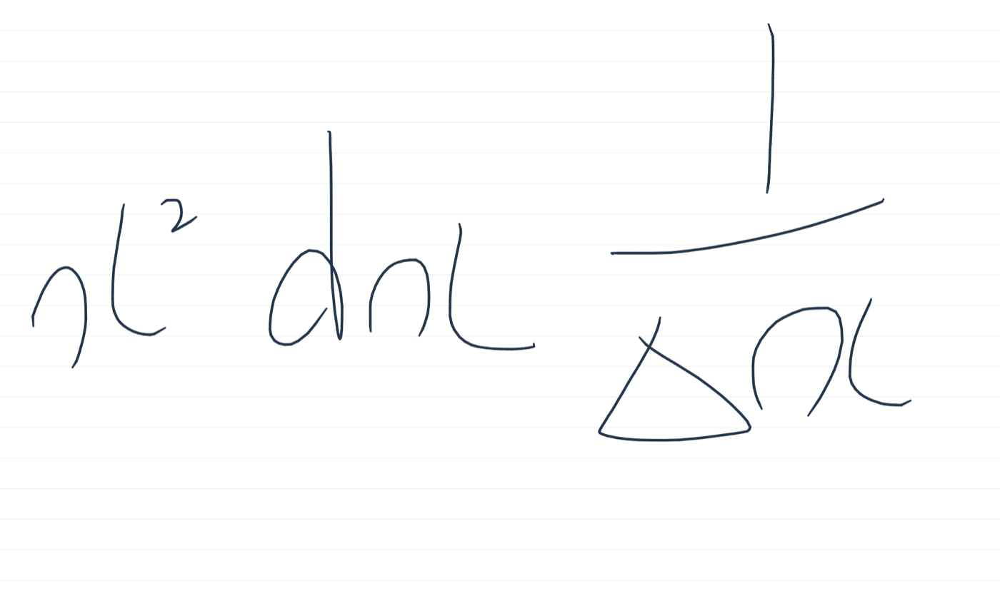
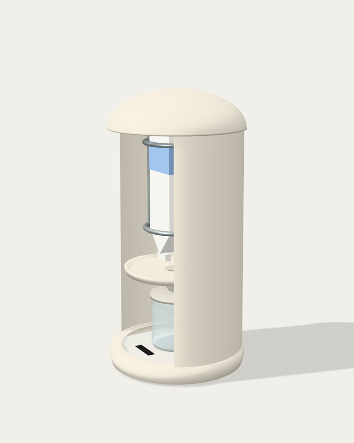
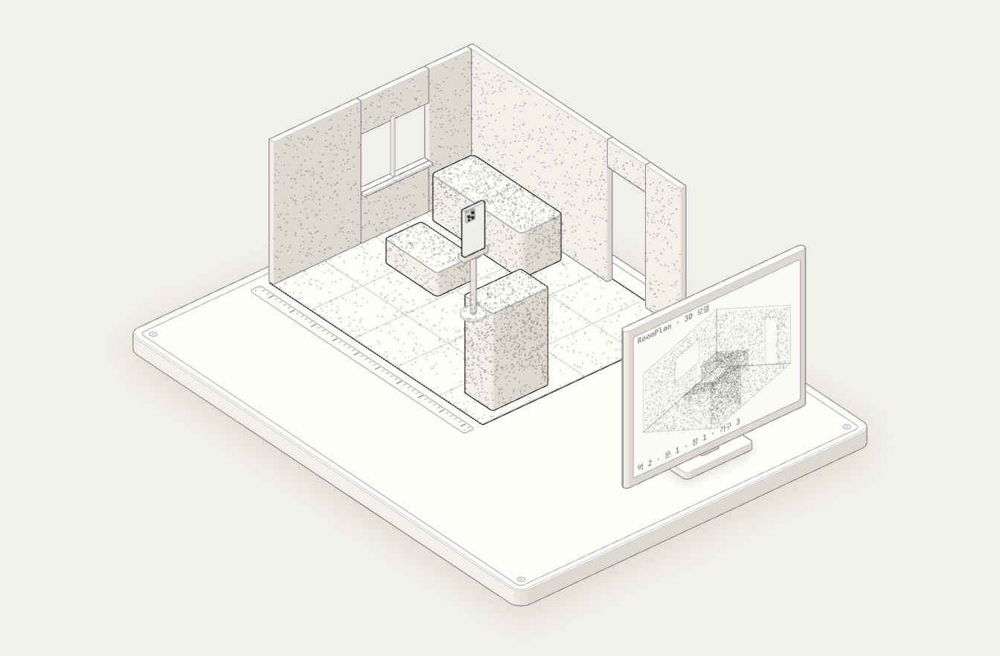
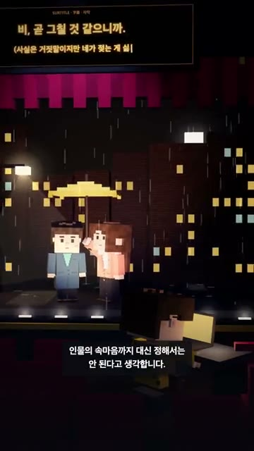

AI와 일할 때 제가 지키는 것
- 01문제와 사용 방식은 제가 정합니다무엇이 불편한지, 어떤 순서로 쓰일지 먼저 정하고 구현은 AI와 나눕니다.
- 02결과물은 직접 써 보고 고칩니다손끝노트는 직접 필기하며 17가지를 고쳤습니다. 영상은 보고 들으며 시점과 목소리를 바꿨습니다.
- 03AI 결과가 그럴듯해도 다시 묻습니다우유 키트에선 확인되지 않은 우유팩 개봉 방식을 짚었습니다. LiDAR에선 가구 배치로 흐르던 방향을 매물 확인으로 되돌렸습니다.
이 원칙으로 만든 결과물
앱·제품·서비스·영상으로 형태는 다르지만, 모두 제가 정한 문제에서 출발해 AI와 만들고 직접 고쳤습니다.
No.01
필기 앱 제작 · 수식도 내 글씨 그대로 남기는 노트
노트북만 들고 수업을 듣는 사람이 수식과 기호를 손글씨로 남기기 위한 macOS 필기 앱입니다.
노트북으로 필기할 때, 손글씨 노트를 바로 옆에서 이어 쓰고 싶었습니다.
Mac 트랙패드를 입력판으로 쓰는 macOS 필기 앱, 손끝노트를 구현했습니다.

제가 한 일
- 문제 정의경제·수학 수업에서 수식을 손글씨로 남기기 어려운 불편에서 출발했습니다.
- 사용 방식 설계위·아래 입력판, 톡으로 넘기기, 같은 자리 다시 쓰기를 정했습니다.
- 방향 결정AI가 필기를 정리하는 대신, 내 글씨를 자연스럽게 남기도록 정했습니다.
- 사용과 수정직접 필기하며 17가지를 고치고 수정 순서를 정했습니다.
사양과 근거 보기
- 형태
- macOS 앱 · Swift·AppKit
- 구현
- 필기·저장·PNG 내보내기 · 그리기 29.00 → 6.55 ms로 개선
- AI
- 터치 입력, 획 보정, 렌더링, 저장 구현 (Codex)

트랙패드 위·아래에 쓰고 톡 치면 누적 노트로 넘어갑니다 · 실제 앱의 사용 흐름을 재현한 도해
No.02
제품 설계 · 얼린 우유팩을 붙잡아 주는 전용 기구
집과 카페에서 라떼용 동결응축 우유를 번거롭지 않게 만들기 위한 제품·창업 기획입니다.
시중에 없는 동결응축 우유 기구를, 완성도 있게 만들고 싶었습니다.
「라떼 제조용 동결응축 우유 만들기 키트」를 설계했습니다. 개인용 키트부터 매장용 공정까지, 개념 CAD와 3D 분해 시뮬레이터로 구현했습니다.

제가 한 일
- 문제 정의얼린 우유팩을 고정할 기구가 없어 과정이 번거로웠고, 그 지점에서 범위를 정했습니다.
- 디자인 기준무인양품·발뮤다 같은 미감, 이음새 최소, 먼지 차단, 카페 저울 연동을 요구했습니다.
- 가정 검증AI 설계가 전제한 우유팩 개봉 방식을 되물어, 확인되지 않은 부분을 찾아냈습니다.
- 방향 전환판매량을 기준으로 대량 조달·규격 냉동의 매장용 공정으로 넓혔습니다.
사양 보기
- 형태
- 개인용 02 · 매장용 03 개념 CAD
- 설계
- 매장용 44 부품 · 1 kg 카세트 6장 · 부품 간섭 검사
- AI
- 구조·치수·경제성 계산 (ChatGPT), 3D 분해 (Claude)
키트를 누르면 펼치고 다시 조립할 수 있습니다 · 개인용 02 · 부품마다 제가 요구한 기능이 붙어 있습니다 · 매장용 03까지 직접 분해해 보기 ↗
No.03
서비스 기획 · 매물을 실제 공간 그대로 확인하는 서비스
집을 구하는 사람이 방문 전에 매물의 실제 공간을 확인하기 위한 부동산 서비스 기획입니다.
매물의 실제 공간을 미리 확인할 수 있게 하고 싶었습니다.
보기 좋은 화면보다 iPhone LiDAR 스캔과 현장 절차를 먼저 두고, 서비스 시제품과 스캔 소스를 만들었습니다.

제가 한 일
- 문제 가설매물 정보가 실제와 달라 손해를 봤다는 후기에서 출발했습니다.
- 개념 제안iPhone LiDAR로 한 번 스캔한 공간을 둘러보기와 SNS 소개에 함께 쓰자고 제안했습니다.
- 목적 정정가구 배치로 흐르던 AI 결과를 매물 확인으로 되돌렸습니다.
- 우선순위마케팅 화면보다 실제 스캔 구현을 먼저 하도록 순서를 정했습니다.
사양 보기
- 형태
- 서비스 개념 시제품(샘플 공간) · RoomPlan Swift 소스 3개
- 흐름
- 한 번 스캔 → 매물 확인 → 둘러보기 → SNS 소개
- AI
- 시제품 화면, 스캔 소스, 공간 확인 노트 (Codex)
샘플 거실로 만든 서비스 개념 시연입니다 · iPhone이 한 바퀴 돌며 점을 모으면 창문과 출입구 위치를 방문 전에 확인할 수 있고, 같은 스캔이 세로형 SNS 소개 화면이 됩니다
No.04
영상 제작 · 그림 앞에 오래 머물게 하는 안내
작품 안내가 어디까지 말해야 하는지를 묻는, 미술관 관람객을 위한 세로형 미디어 프로젝트입니다.
작품을 볼 때 중요한 것은 정해진 감정보다 스스로 느낄 여백이라고 생각했습니다.
직접 고른 네 가지를 근거로, 이 생각을 118.33초 세로 영상에 담았습니다.

제가 한 일
- 기획‘시선’을 주제로 고르고, 세 공간(미술관·소극장·지하철)과 대사를 정했습니다.
- 스타일복셀 스타일과 장면·내레이션 방향을 정했습니다.
- 연출 수정보고 들으며 감정 큐브, 카메라 시점, 목소리를 고치도록 지시했습니다.
- 선택샘플을 비교해 목소리와 최종본을 골랐습니다.
“좋은 안내는 시선을 붙잡고, 알맞은 거리에서 감상을 넓히고, 무엇을 느낄지는 각자에게 남겨 둡니다.”
영상의 마지막 내레이션
근거와 사양 보기
- 회화모네 《루앙 대성당》
- 미술사오주석 『한국의 미 특강』
- 시하종오 「동승」
- 경험일본어 연극 자막 제작
- 형태
- 1080 × 1920 · 30 fps · 118.33초
- 구성
- 미술관 · 소극장 · 지하철 세 장면 · 자막 23개
- AI
- Three.js 장면·카메라, 음성·BGM 합성, 렌더링 (Codex)
경험
AI 작업 이전부터, 듣는 사람에 맞춰 기준을 바꿔 왔습니다.
Hult Prize 2024캠퍼스대회 · 팀
취미키트 정기배송 서비스에 시장성과 사회적 필요의 근거가 약하다는 내부 피드백이 있었습니다.
이를 적극 반영해 식품손실 예방 플랫폼으로 방향을 바꿨습니다. 식품 스타트업 2곳과 교내 창업지원기관의 자문으로 근거를 보완했습니다.
2024.02.02 교내대회 최우수상
산업설비기업 PEMS영업기획 인턴 · 베트남
약 600개 부품 자료에서 구매 담당은 발주일·수량으로, 기술영업은 사용 위치·기능으로 부품을 찾았습니다.
관련 설비와 용도를 검색 태그로 넣었습니다. 기술영업 담당자와 반복 검토해 실제 사양에 맞췄습니다.
미즈호은행산업리서치 인턴
반도체 교육자료가 수출액·수익률 중심이라 품목별 특징이 안 보인다는 의견을 받았습니다.
8대 제조공정 기준으로 다시 짰고, 사내 교육자료로 채택됐습니다.
미즈호은행고객사 IR 자료 공동 번역
같은 용어를 다르게 옮겨 취합 뒤 맞추는 데 시간이 들었습니다.
용어부터 맞추고 교차 검토하자고 제안해, 기한 안에 완성했습니다.
SK AIGEN에서
불편을 겪는 사람이 분명한 문제를 골라, 실제로 쓰이는 서비스까지 만들어 보고 싶습니다.
창업과 사회·공공 분야의 프로젝트에 참여하면서, 지금까지 만든 것들을 실제 사용자 앞에 내놓는 단계까지 이어 가고 싶습니다.
팀에서 맡을 역할
아이디어가 말로만 오갈 때 가장 먼저 시제품을 만들어 오는 사람이 되겠습니다. 팀의 생각을 입력·동작·결과가 보이는 요구사항과 짧은 시연으로 정리해, 같은 화면을 보며 논의하게 하겠습니다.
참여하고 싶은 프로젝트
Hult Prize에서 식품손실을, LiDAR 기획에서 매물 정보 왜곡을 다뤘듯이 생활 속 손해를 줄이는 서비스를 만들고 싶습니다. 사회적 필요와 사업으로 지속될 수 있는지를 함께 따지겠습니다.
손끝노트사용성 개선과 출시
저 혼자 쓰며 고쳐 온 필기 앱을 다른 사람도 쓸 수 있게 다듬어 출시해 보겠습니다. 노트북으로 수업을 듣는 학생들에게 먼저 써 보게 하고, 막히는 지점부터 고치겠습니다.
동결응축 우유 키트사용자 모집과 시장 검토
개념 설계까지 온 키트를 시제품으로 만들고, 집과 카페에서 써 볼 사용자를 모집하겠습니다. 실제로 쓰이는 모습을 보고 시장에 적용할 수 있는지 검토하겠습니다.
LiDAR 공간 서비스가설 확인
최근 매물을 본 사람들에게 어디에서 오해가 생겼는지 묻겠습니다. 허락받은 한 공간을 사진, 평면도, LiDAR 모델로 보여 주고 이해가 어떻게 달라지는지 비교해, 평면도로 충분하다면 LiDAR 확대는 보류하겠습니다.
배우고 싶은 것
답을 유도하지 않고 불편을 묻는 인터뷰 방법과, 원하는 결과만 해석하지 않도록 비교 조건을 정하는 법을 배우고 싶습니다.
연락
기획과 구현을 함께 발전시킬 협업을 기다립니다.
timtim6842@gmail.com
skw6842@naver.com